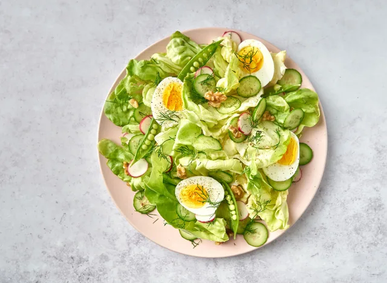

Crunchy Breakfast Salad Recipe
Looking for a healthy way to start your day, our breakfast salad will provide
you with a healthy and delicious meal

Required ingredients
For the salad
- 2 large eggs
- 2 cups butter lettuce
- 4 radishes, thinly sliced
- 1/4 cup snap peas
- 1 small English cucumber or Persian cucumber, thinly sliced
- 2 Tbsp chopped walnuts
- Fresh dill
For the dressing
- 2 Tbsp balsamic vinegar
- 1 tsp dijon mustard
- 1/4 cup extra virgin olive oil
- Salt and pepper
how to make it
- Bring a small pot of water to a boil. Add in the eggs and boil for 10 minutes, then
transfer eggs to an ice bath for 3 minutes. Peel the eggs and cut them into halves.
- In the meantime, make the dressing
by whisking all the ingredients together in a small bowl or jar.
- Combine the butter lettuce, radishes, snap peas, cucumber, and walnuts in a large bowl and toss with a drizzle
of the dressing. Add to a plate and top with fresh dill and the egg halves.
s